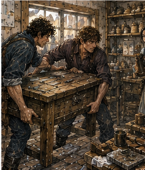

The next morning I had four copper and no appointment.
This was dangerous.
Appointments made decisions.
No appointment meant Bale.
Kett.
Varo.
Pell.
Guild.
Antonius.
Jorren.
Alden.
Hessa in two days, assuming no symptoms.
Breakfast.
Breakfast won because it was closest.
I spent one copper on eggs, bread, and something the cook called sausage.
It was shaped like sausage.
That was enough.
Three copper.
I sat near the window and opened my notebook.
DORRIN.
BALE.
KETT.
VARO.
Then:
VALE / RUSK.
WEST ORCHARD.
HESSA 2 DAYS.
Too many directions.
I drew no arrows.
Progress.
Someone dropped into the chair opposite me.
Jorren.
He had wet hair, a dark shirt with one sleeve rolled higher than the other, and a bruise along his jaw.
“You look organized.”
“I am.”
“Bad.”
“What happened to your face?”
“Door.”
“No.”
“Man near a door.”
“Better.”
He stole half my bread.
“Buy your own.”
“I did.”
“Then why mine?”
“Yours was closer.”
Strong argument.
“What are you doing?”
“Deciding.”
“Don't.”
I closed the notebook.
“What are you doing?”
“Eating your breakfast.”
“After.”
“Sleeping.”
“Before?”
“Worked.”
“Dock gate?”
“Finished.”
“Finished today?”
“Finished forever.”
That got my attention.
“What happened?”
“Nothing. Job finished.”
Right.
Work ended without catastrophe.
“Next?”
“Don't know.”
“How can you not know?”
Jorren stared.
“Because I don't.”
Reasonable.
He ate my bread.
“Guild later.”
“For work?”
“Maybe.”
“Training?”
“Maybe.”
“Drink?”
“Definitely.”
“At what time?”
“Later.”
This was useless.
I liked it.
“Come spar.”
“No.”
He stopped chewing.
“What?”
“No.”
“You sick?”
“Sore.”
“From?”
“Road job.”
“You fought?”
“Pig.”
He stared.
I explained.
Bad decision.
By the end, Jorren was laughing loudly enough that the cook looked over.
“I did not fight the pig.”
“You used magic.”
“To redirect.”
“You used magic on a pig.”
“Small magic.”
He wiped his eyes.
“Fuck.”
“I hate you.”
“Come spar.”
“No.”
“Why?”
“Hessa said no deliberate load testing.”
“Swords aren't magic.”
“My shoulders are sore.”
He looked offended.
“You're nineteen.”
“Yes.”
“So?”
“Apparently nineteen-year-olds have shoulders.”
He considered.
“Fine.”
Unexpected.
“Fine?”
“Walk.”
“What?”
“Come on.”
He stood.
I looked at the remaining egg.
Then at him.
“Where?”
“Market.”
“Why?”
“Need boots.”
He walked away.
I took the egg.
No appointment.
Fine.
We went to the market.
Not East Market where Dara worked.
South market.
Cheaper.
Louder.
More cloth.
More food.
More people selling things from blankets.
Jorren's boots looked fine.
I told him.
“They leak.”
“Where?”
“Bottom.”
“That is where boots should not leak.”
“Yes.”
“Repair.”
“Already did.”
“Again.”
“No.”
“Why?”
“Because I want new boots.”
There.
Preference.
Not optimization.
“What kind?”
“Boot kind.”
I stopped asking.
The first seller had twelve pairs.
Jorren tried three.
Rejected all.
“Why?”
“Wrong.”
“How?”
“Wrong.”
Second seller had better leather.
More expensive.
Jorren tried one pair and walked six steps.
“No.”
I watched his foot.
Heel slipped slightly.
“Too wide.”
He looked at me.
“Yes.”
“I can help.”
“No.”
“I already did.”
“You can shut up.”
I did.
Third stall.
Jorren found brown boots with reinforced toes.
He put them on.
Walked.
Bent.
Jumped once.
Seller looked alarmed.
Jorren said, “Good.”
“How much?”
“Eleven copper.”
Jorren had nine.
Of course.
He looked at me.
“No.”
“I said nothing.”
“Face.”
Everyone.
He took the boots off.
Seller said, “Ten.”
Jorren said, “Nine.”
“Ten.”
“Nine and old boots.”
The seller looked at the old boots.
“Why?”
“Leather.”
“Bad leather.”
“Still leather.”
“Wet.”
“Not now.”
They argued.
I stayed out.
This was difficult.
Seller eventually said nine and old boots.
Jorren paid.
Done.
No Greg.
Excellent.
He put on new boots.
Old boots stayed.
“Happy?”
“Yes.”
“Good.”
He looked at me suspiciously.
“What?”
“You didn't negotiate.”
“Not my boots.”
“Good.”
That felt like a test I had not known I was taking.
We walked.
Jorren's stride changed slightly.
Longer.
He liked them.
He did not say.
At the next street, he stopped at a knife stall.
“No.”
He looked at me.
“What?”
“You have no money.”
“I can look.”
“Dangerous.”
“You bought rocks.”
“Fuck you.”
He looked.
Did not buy.
We kept going.
I had three copper.
He had none.
Balanced.
“Guild?” I asked.
“Later.”
“What now?”
“Tam.”
There.
Name from the green-door building.
“Who is Tam?”
“Tam.”
“Useful.”
“Lives upstairs.”
“From you?”
“Sometimes.”
“What does he do?”
“Shoes.”
I looked at Jorren's new boots.
“Why didn't he make yours?”
“Doesn't make boots.”
“Shoes.”
“Yes.”
“Difference?”
“He'll hit you.”
Good.
“Why Tam?”
“Needs help moving a table.”
I stopped.
“You're going to move furniture in new boots.”
“Yes.”
“Why?”
“He asked.”
Simple.
“Do you need me?”
Jorren looked at me.
“No.”
Good.
Then:
“Come anyway.”
Different.
I went.
The green-door building looked the same.
Four floors.
Narrow stairs.
Someone had left a bucket on the second landing.
Jorren kicked the door on the third floor.
A voice shouted, “Open.”
Jorren opened.
Tam was older than I expected.
Maybe forty.
Thin.
Black hair tied back.
Round spectacles.
He sat on the floor beside a low workbench with half a shoe in his lap.
Not boot.
Shoe.
Fine.
“You brought Greg.”
“You know me?”
Tam looked at Jorren.
“Is that Greg?”
“Yes.”
“Then I know Greg.”
Hostile network again.
Tam pointed with a small hammer.
“Table.”
The table was against the far wall.
Heavy.
Square.
Covered in leather scraps, lasts, thread, knives, wax, awls, three cups, and a dead plant.
“Move where?”
“Window.”
“Why?”
“Light.”
“Why now?”
“Because I asked.”
Jorren started clearing it.
I helped.
Tam did not.
His shoe remained in his lap.
“Your table.”
“Your hands.”
Fair.
We cleared.
The dead plant went on the floor.
Tam said, “Careful.”
“It is dead.”
“Still mine.”
I set it carefully.
We lifted.
Heavy.
Not terrible.
My shoulders objected.
Quietly.
Jorren had one end.
I had the other.
“Window.”
“Yes.”
We moved.
Chair in way.
Tam moved chair with his foot.
Doorway narrow.
Not relevant.
Window side floor sloped.
Relevant.
We set table down.
It rocked.
Tam swore.
“Floor.”
Jorren said, “Table.”
Tam glared.
I pressed corners.
One leg short?
No.
Floor uneven.
Old building.
Tam reached for leather scrap.
I said nothing.
He folded it.
Wedged under leg.
Table stable.

Solved.
No Greg.
Excellent.
“Again,” Tam said.
“What?”
“Bench.”
Jorren looked at me.
“You said table.”
Tam said, “I lied.”
We moved bench.
Then a shelf.
Then a chest.
This was not helping move a table.
This was rearranging a workshop.
“Why?” I asked.
Tam pointed at the window.
“Winter light is bad. Summer light is good. Now summer.”
Seasonal workshop geometry.
Reasonable.
“Do you do this every year?”
“No.”
“Why not?”
“Usually complain.”
Growth.
Maybe.
We moved the chest.
My back remembered yesterday.
“Done,” I said.
Tam looked around.
“No.”
I sat on the floor.
“Done for me.”
Jorren laughed.
Tam looked at my hands.
“You charge?”
“No.”
“Good.”
“Jorren owes me breakfast.”
“I stole bread.”
“You stole half.”
Tam said, “There is soup.”
Jorren said, “Good.”
Apparently payment.
We ate soup in Tam's workshop.
Three bowls.
Tam kept working while eating.
He made shoes.
Actual shoes.
Fine leather.
Thin soles.
City wear.
Not work boots.
His hands were fast.
Very fast.
He shaped the upper around a wooden last, pulled tension, fixed with tiny nails.
I watched.
“Don't.”
I looked away.
“I wasn't going to ask.”
“You were.”
“I can watch without improving.”
Tam looked at Jorren.
“Can he?”
“No.”
Hostile.
I ate soup.
Tam had customers.
Two while we were there.
First woman picked up black shoes.
Tam made her walk.
She said left pinched.
He marked something.
Took them back.
No argument.
Second man wanted repair by tomorrow.
Tam said three days.
Man said tomorrow.
Tam said four days.
Man accepted three.
Good.
I enjoyed him.
Jorren knew both customers by sight.
Not name.
The woman asked Jorren if dock job finished.
He said yes.
She said her brother needed two men at river stairs next week.
Jorren said maybe.
No Greg.
World.
After soup, Tam said, “Your friend stares.”
Jorren said, “Yes.”
“I noticed.”
Tam looked at me.
“What?”
“Nothing.”
“You have a question.”
Several.
I chose one.
“Why thin sole?”
“Customer walks inside.”
“That's it?”
“Yes.”
I liked that answer.
No universal shoe.
Use.
“What happens when outside?”
“She owns other shoes.”
Of course.
I stopped.
Tam nodded once.
Maybe approval.
Maybe relief.
We left around midday.
Jorren's plan had been sleep.
He had failed.
“What now?”
I asked.
“Guild.”
Finally.
We walked there.
The contract board had changed again.
Three jobs removed.
Five added.
One red notice.
Not emergency.
Red meant higher threat.
Jorren looked.
I looked.
No need.
Alden was not there.
Pessa not there.
Dorn not there.
Good.
Jorren pointed at a posting.
“Tomorrow.”
I read.
RIVER STAIRS CLEARING
TWO BRONZE
HALF DAY
DEBRIS / SLIP RISK
NO KNOWN CREATURE THREAT
THREE COPPER + MEAL
“Three.”
“Yes.”
“Low.”
“Meal.”
“Bad meal.”
“Maybe.”
He took the slip.
“Why that?”
“River.”
“That is not an answer.”
“Close.”
Ah.
Close to home.
Short.
Maybe Tam's woman had said river stairs next week, but this was tomorrow.
Different.
Maybe not connected.
Do not connect.
“What about this?”
I pointed at another.
WAREHOUSE NIGHT WATCH
FOUR BRONZE
SIX COPPER
NO SLEEPING
Jorren shook his head.
“Night.”
“Yes.”
“I like night.”
“So?”
“I don't like working night.”
Preference.
Again.
I looked at the board.
Could take something.
No appointment tomorrow except Hessa? Hessa said three days from Chapter 44 morning. This was next day after orchard, so tomorrow would likely be due or near due.
Need track.
Hessa visit yesterday before Bale and orchard invitation. Orchard next day. Today after orchard. Tomorrow is two days since Hessa? She said three days if no symptoms. So not yet.
I had time.
River stairs with Jorren.
Three copper.
Meal.
Physical labor.
No magic expected.
My back said no.
Not pain.
Opinion.
“I'll pass.”
Jorren looked at me.
“Really?”
“Yes.”
“Why?”
“Sore.”
“You're nineteen.”
“We covered this.”
He shrugged.
“Fine.”
No persuasion.
He signed himself.
One Bronze?
Posting required two.
He looked around.
Called to a woman near the practice door.
“Eli.”
She turned.
“River tomorrow?”
“Pay?”
“Three and food.”
“No.”
“Close.”
“How close?”
“East stairs.”
She considered.
“Fine.”
Done.
Jorren had another person.
Immediate.
No need Greg.
Good.
Something in me noticed.
Not hurt.
Just noticed.
Old Greg had become difficult to replace.
Present Greg was extremely replaceable.
Correct.
Healthy.
Annoying.
Jorren handed in the slip with Eli.
I did not know Eli.
No need.
“What are you doing?” Jorren asked.
“Maybe Kett.”
“Who?”
“Kiln.”
“Why?”
“Rocks.”
He stared.
“Still?”
“Yes.”
“I thought you gave them away.”
“Physical rocks. Not conceptual rocks.”
He closed his eyes.
“Go.”
I went.
Kett's Kiln was farther north than I remembered from Dorrin's directions.
Not one kiln.
Three.
Brick buildings around a yard.
Heat even from street.
Carts loaded with clay pipe, tile, stone, and sealed ceramic jars.
I stopped outside.
My shoulders were sore.
I had spent the morning buying boots without buying boots, moving furniture without being asked, eating soup, and refusing work because my body wanted rest.
Kett could wait.
But I was here.
Dangerous sentence.
I went in.
A man at the yard entrance said, “Delivery?”
“No.”
“Pickup?”
“No.”
“Then office.”
I went office.
A young woman behind a high desk looked up.
“What?”
“Questions about kestrin treatment.”
“Buying?”
“No.”
“No.”
Clean.
“Can I pay for time?”
She looked at me differently.
“How much time?”
“Ten minutes.”
“One copper.”
I had three.
Reasonable.
“Who answers?”
“Depends on question.”
“Heat treatment for mana behavior.”
She called through a side door.
“Kett!”
A voice shouted, “What?”
“Ten-minute question!”
“Who?”
She looked at me.
“Greg.”
“Which Greg?”
Excellent.
“Barrier Greg.”
I hated Carrow.
A man came through.
Sixty maybe.
Huge forearms.
White hair.
No eyebrows.
Possibly kiln.
“You have ten.”
I put one copper down.
“Do you heat-treat kestrin for ward suppliers?”
“Yes.”
“Does heat alone create suppression?”
“Can.”
“Retention?”
“Can.”
“Consistency?”
“No.”
Interesting.
“Never?”
“Not what I said.”
Right.
“Heat control insufficient?”
“Stone varies.”
Same.
“Do you sort before?”
“If customer pays.”
“Do customers supply sorted stone?”
“Yes.”
“Do you treat by batch?”
“Yes.”
“Can two batches with same heat behave differently?”
“Yes.”
“How differently?”
“Enough.”
“Why?”
“Stone. Moisture. previous treatment. salts. kiln position. size. bad luck.”
“Can you control kiln position?”
“Yes.”
“Moisture?”
“Yes.”
“Size?”
“Yes.”
“Stone?”
“Some.”
“Previous treatment?”
“If they tell me.”
“Do they?”
He laughed.
Good.
“Could three sacks from one professional process differ while each sack is internally consistent?”
I stopped.
Too close?
Public hypothetical.
No seized details beyond three sacks differing, which was evidence.
I had just revealed shape.
Not owner.
Not Guild.
Still.
Kett looked at me.
“Could.”
“How?”
“Different runs.”
“Same run, different sorting after?”
“Could.”
“Different source lots?”
“Could.”
“Different treatment targets?”
“Could.”
“Storage?”
“Could.”
Everything possible.
No narrowing.
Good.
“What would make you call material professionally controlled?”
He thought.
“Repeat order.”
“What?”
“If customer comes back and asks for same behavior and I can hit it again.”
There.
Repeatability.
Not one impressive batch.
Manufacturing version of Greg.
Interesting.
“Can you?”
“For some.”
“What limits?”
“Money.”
I laughed.
He did not.
“Also kiln.”
“Also stone.”
“Also people.”
“Also weather.”
“Also idiots.”
“Which category am I?”
“Paying.”
Fair.
“Who tests your output?”
“Usually customer.”
“You don't?”
“Heat, weight, appearance. Mana if contract says.”
“Who supplies mana test?”
“Customer or we charge.”
“Do you know Bale?”
“Yes.”
“Do you supply them?”
“No.”
Direct.
Good.
“Kestrin specifically?”
“No.”
“Varo?”
“Yes.”
“What relationship?”
“Sometimes they treat before me. Sometimes after.”
“Order changes behavior?”
“Yes.”
“Do you know Silas Marris?”
“Yes.”
No reaction.
“How?”
“They move freight.”
“Do they buy from you?”
“No.”
“Have they?”
“Not that I remember.”
Good.
Not evidence of no relationship beyond his memory.
“Darrowmere?”
He frowned.
“Town?”
“Yes.”
“What about it?”
“Nothing.”
Stop.
No reason.
I looked at clock.
Probably ten minutes.
“One more.”
“You have two.”
“Why no eyebrows?”
He stared.
Then laughed.
“Kiln.”
I nodded.
Worth copper.
I left.
Outside, I wrote.
KETT
heat treatment can affect suppression / retention
heat alone does not guarantee consistency
variables: stone, moisture, prior treatment, salts, kiln position, size, luck
professional control = ability to repeat target on repeat order, not one good batch
customers often test mana behavior themselves
Varo may treat before OR after kiln depending product
Bale: Kett says no kestrin supply
Silas Marris: known freight company, no remembered purchases from Kett
Darrowmere: no information asked / no connection
Then I underlined:
REPEAT ORDER.
Edrin's seized sacks differed from one another but were narrow within each.
Could be three runs.
Could be three targets.
Could be storage.
Could be source lots.
Could be post-sorting.
Still broad.
But the better question might not be who can make one consistent sack.
Who can make the same kind again?
No.
Edrin had not said sacks matched.
They differed.
So maybe not.
Do not improve evidence by wanting it.
I crossed out the question.
Good.
Two copper left.
Body tired.
No reason to visit Varo.
I went home.
On the way, I passed Jorren again.
He was sitting outside a drink shop in his new boots.
“Thought you were sleeping.”
“Later.”
“You said definitely drink.”
“Yes.”
He lifted cup.
Consistent.
“Kiln?”
“Yes.”
“Good rocks?”
“Complicated rocks.”
“Better.”
He pointed at empty chair.
I looked.
Two copper.
Drink maybe one.
Body tired.
No appointment.
I sat.
“What did you learn?” he asked.
“You don't care.”
“No.”
“Then why ask?”
“Conversation.”
Right.
I ordered one beer.
Bad.
Of course.
Jorren told me Tam had already moved the table back six inches because the afternoon sun hit his eyes.
I laughed.
All that work.
Six inches.
“Was it wasted?”
Jorren asked.
I thought.
“No.”
“Why?”
“He learned six inches.”
Jorren nodded.
That was enough.
I drank.
No one requested anything.
No one needed me.
The kiln would fire without me.
Tam would make shoes.
Jorren would clear river stairs with Eli.
Alden was somewhere.
Pessa somewhere else.
Dorn probably eating an onion incorrectly.
Edrin had evidence.
Hessa had students.
Antonius had businesses.
Pell had my rocks.
The city did not pause when I sat down.
Good.
I sat anyway.